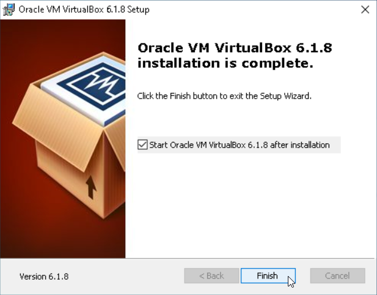

Downloading and Installing VirtualBox on Windows 10
In this tutorial I will show you how to download and install the latest version of VirtualBox to your Windows 10 computer.
1. Download VirtualBox
Point your web browser to https://www.virtualbox.org/wiki/Downloads and then click the Windows hosts link, as shown in figure 1.
Choose to save the .exe file, to the place where you normally save your downloads. The file’s name will be similar to VirtualBox-6.1.8-137981-Win.exe, and depends on the version number. At the time of writing, the most recent version of VirtualBox was 6.1.8.
2. Verify your download
It is good practice to perform an integrity check on any file you download, to provide reassurance that the file was downloaded correctly and is free from tampering. The VirtualBox executable is digitally signed, making manual verification unnecessary. You can see this by right-clicking the file (in your Downloads folder), choosing Properties from the context menu, and then selecting the Digital Signatures tab. If you’re interested in manually generating a file hash, I’ll be publishing a tutorial on this shortly.
3. Installation
Now that you have checked the integrity of the VirtualBox installation file, you can execute it by double-clicking it. Doing so will bring up a dialogue box similar to the one shown in figure 2. Click Next > to proceed.
The following screen allows you to choose which features to install. To ensure that all features are installed, click on the hard drive icon to the left of VirtualBox Application, and then click Entire feature will be installed on local hard drive, as shown in figure 3. To proceed, click Next >.
In the next screen, you can leave all options selected, as shown in figure 4.
You will receive a warning (see figure 5) that continuing with the installation will temporarily disconnect you from the network. Make sure you’re not doing anything important that requires an Internet connection before pressing Yes.
Finally, to begin the installation process according to the options you’ve selected thus far, click the Install button shown in figure 6.
After clicking the Install button, you will probably see a User Account Control (UAC prompt — see figure 7 — asking if you wish to proceed. If you see the words Verified publisher: Oracle Corporation then it is safe to click Yes.
You will see a progress bar as VirtualBox is installed to your computer, and at some point, another dialogue box will appear. This one, shown in figure 8, asks whether you wish to proceed with the installation of device software. You should click Install here.
The next screen you see should look like figure 9. Leave the checkbox as it is and click finish here to start up VirtualBox for the first time.

When VirtualBox starts, you will see the Oracle VM VirtualBox Manager appear, as shown in figure 10. You are now ready to begin creating your first virtual machine (VM). I will show you exactly how to do that in the next article.
Summary
You have downloaded the latest version of VirtualBox and installed it to your Windows 10 computer. In the next tutorial, I will show you how to create a VM and load it with Debian, a popular Linux distribution.